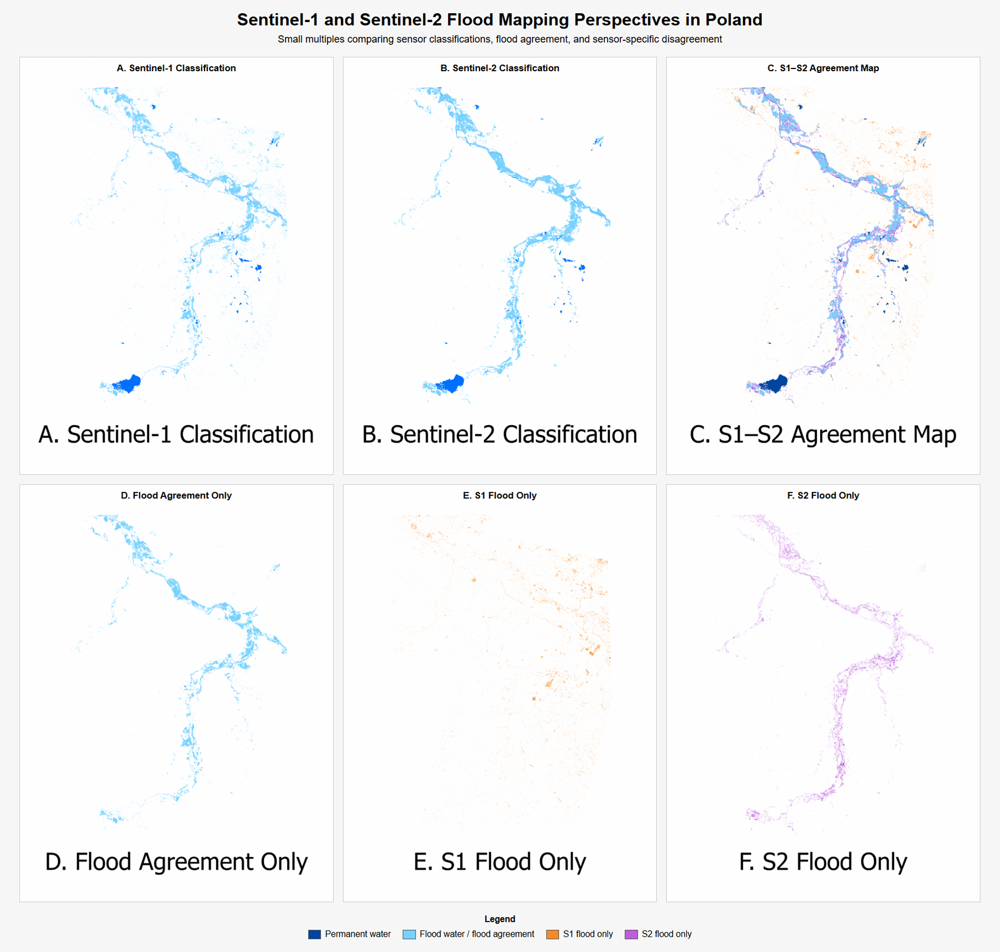

The first map was designed as a more public-facing scientific communication piece. The underlying data are highly technical: raster classifications from Sentinel-1 and Sentinel-2, reclassified into permanent water, flood agreement, and sensor-specific disagreement. At first, this kind of output can look visually noisy and difficult to interpret because every pixel carries classification information. The goal of the final map was to organize that complexity into a clear spatial story. Instead of simply showing two separate classification maps, the final product emphasizes where the sensors agree on flood water and where they diverge. This makes the main result easier to understand without requiring the viewer to know the technical details of SAR, optical imagery, or raster classification workflows.
The design process for this map focused on guiding the reader through the result. The main map provides regional context, the inset highlights the urban subset where disagreement is more pronounced, and the stacked bar chart summarizes the difference between the full area and the subset. The explanatory text boxes help connect the visual patterns to the scientific interpretation: agreement is stronger across broader open floodplain areas, while disagreement increases in the more urbanized subset where SAR-based flood mapping can be more difficult. This map is therefore meant to function as a narrative figure. It communicates the “so what” of the analysis by combining spatial pattern, quantitative summary, and short interpretive text in one layout.

The small multiples map communicates the same general dataset in a different way. Rather than telling one integrated story, it breaks the analysis into separate visual components so the viewer can compare them directly. The panels show the Sentinel-1 classification, Sentinel-2 classification, the combined agreement map, and then isolated views of flood agreement, S1-only flood, and S2-only flood. This structure is useful because it separates the layers that are combined in the final agreement map. It allows the viewer to inspect how each sensor contributes to the final pattern and understand where the agreement and disagreement classes come from.
This visualization is more analytical than narrative. It is especially useful for explaining the workflow or supporting a technical audience that wants to see the components behind the final map. The repeated layout, consistent extent, and shared legend make comparison easier because only the mapped classification perspective changes between panels. However, the small multiples layout is less effective as a standalone communication product for a broad audience because it requires more interpretation from the viewer. Compared with the final agreement map, it is less visually dynamic and has less contextual explanation, but it is very effective for transparency. Together, the two products serve different communication goals: the agreement map translates the results into a clear, guided story, while the small multiples map documents and explains the component layers behind that story.